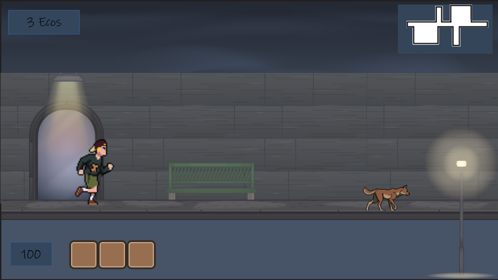
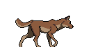
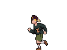
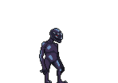

Sussurros de um despertar
Explore as sombras de um mundo além dos espelhos e descubra os segredos esquecidos neste desafiador jogo Side-Scrolling.
Conheça o Press Kit
Explore as sombras de um mundo além dos espelhos e descubra os segredos esquecidos neste desafiador jogo Side-Scrolling.
Conheça o Press Kit



ECOS: Sussurros de um despertar é um projeto focado em proporcionar uma atmosfera envolvente e mecânicas precisas de navegação lateral. Você vai encontrar uma atmosfera densa e cheia de desafios que põem em teste a coragem e o amor de um jovem por seu melhor amigo. No caminho, os desafios envolverão a atúcia do jogador e a capacidade de entender o mundo e aqueles que estão ao redor. Uma aventura inesquecível!